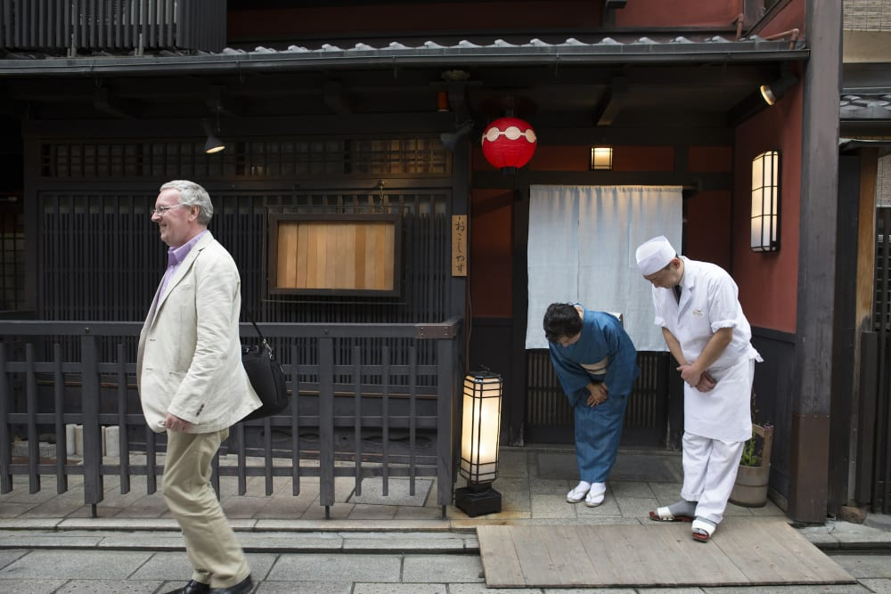

Traditional Arts

Japanese traditional arts, such as ikebana (flower arranging), calligraphy (shodō), and tea ceremony (chanoyu), reflect a deep appreciation for beauty, simplicity, and mindfulness. These practices emphasize patience, precision, and a connection to nature.Japan's traditional arts embody a rich tapestry of culture and history. Ikebana, the art of flower arrangement, emphasizes harmony and balance. Tea ceremonies, or chanoyu, reflect mindfulness and appreciation of simplicity. Calligraphy, known as shodō, transforms writing into a visual art form. Kimono crafting showcases exquisite fabric patterns and techniques. Finally, Noh and Kabuki theater blend drama, music, and intricate costumes to tell timeless stories. Each art form offers a glimpse into Japan's soul and enduring beauty.
Cuisine

Japanese cuisine, or washoku, is renowned for its seasonal ingredients, presentation, and balance of flavors. Iconic dishes include sushi, ramen, tempura, and kaiseki—a multi-course meal that showcases artistry in cooking. Emphasis on umami and harmony makes Japanese food unique.Japanese cuisine is a harmonious blend of flavors and aesthetics. Sushi and sashimi showcase the freshness of seafood, artfully presented. Ramen offers a comforting bowl of rich broth and noodles, with endless regional variations. Seasonal ingredients shine in dishes like kaiseki, a multi-course meal that reflects nature’s bounty. Tempura features lightly battered and fried vegetables and seafood, creating a delightful crunch. Finally, matcha, a finely ground green tea, is not just a beverage but a central element in the tea ceremony, embodying the essence of Japanese culture.
Festivals (Matsuri)

Japan hosts numerous vibrant festivals throughout the year, celebrating seasonal changes, historical events, and local traditions. Notable examples include the cherry blossom festivals (hanami) in spring and the Gion Matsuri in Kyoto, featuring elaborate floats and traditional clothing.Japanese festivals, or matsuri, are vibrant celebrations steeped in tradition. Each summer and winter, communities come alive with colorful parades, showcasing ornate floats and lively performances. Hanami, the cherry blossom festival, invites people to picnic under blooming sakura trees, celebrating the beauty of nature. Gion Matsuri in Kyoto features stunning processions and ancient rituals that span the entire month of July. Aoi Matsuri offers a glimpse into Japan's imperial past with its elegant costumes and ceremonial horseback riders. These festivals foster a sense of community, preserving cultural heritage while creating unforgettable experiences.
Anime and Manga
Anime (animated films and series) and manga (comic books) have become global phenomena, showcasing unique storytelling and artistic styles. These mediums cover a wide range of genres, appealing to audiences of all ages and interests.Anime and manga are cultural phenomena that have captivated audiences worldwide. Manga, or Japanese comics, span diverse genres, appealing to all ages and interests. Anime, the animated counterpart, brings vibrant characters and imaginative worlds to life through stunning visuals and dynamic storytelling. Iconic series like Naruto and One Piece explore themes of friendship, adventure, and perseverance. The artistry of both forms often reflects intricate details, from character design to elaborate backgrounds. Together, anime and manga not only entertain but also shape global pop culture, influencing art, fashion, and storytelling across the globe.
Etiquette and Manners
Japanese culture places a strong emphasis on etiquette, with deep-rooted customs regarding politeness, respect, and harmony. Bowing as a greeting, removing shoes before entering homes, and the careful use of language reflect the importance of social harmony and consideration for others.Japanese etiquette and manners emphasize respect and harmony in social interactions. Bowing is a common greeting, reflecting humility and politeness. Removing shoes before entering a home signifies respect for personal space and cleanliness. Dining customs, such as saying "itadakimasu" before a meal, express gratitude for the food. It’s also important to avoid talking loudly in public and to follow strict queuing rules. Understanding these nuances fosters deeper connections and appreciation for Japanese culture.